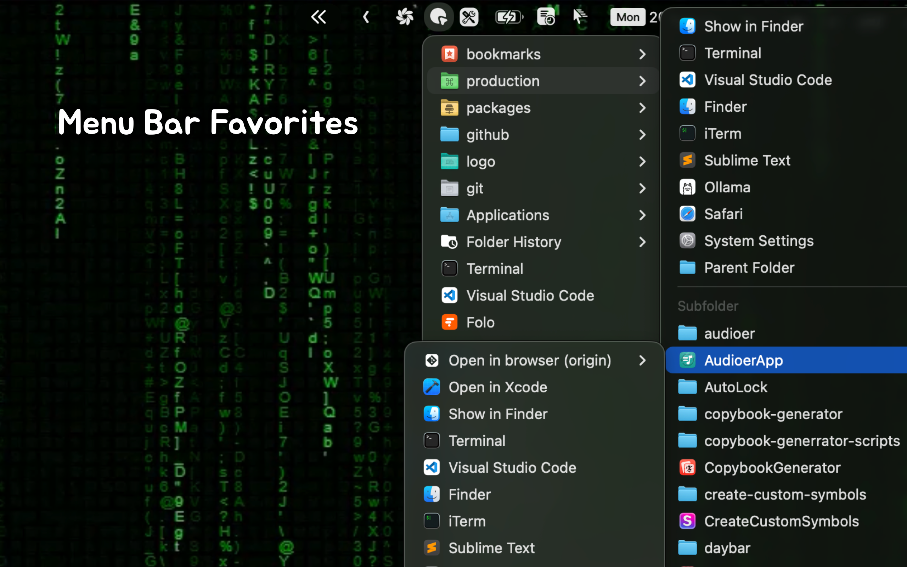
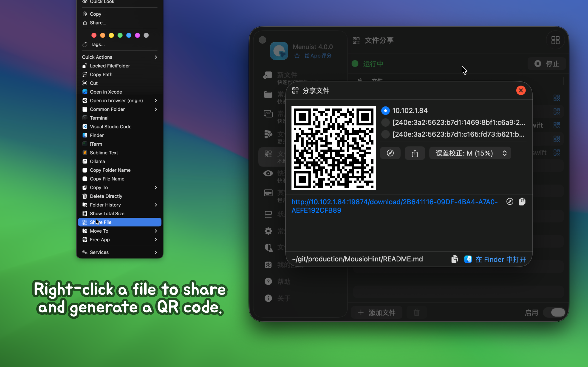

minimum OS requirement: macOS 14.0
IMPORTANT
Based on user feedback that the original app name RightMenu Master was not ideal, I used AI to generate several name candidates and held a vote. As a result, the app name will be changed to Menuist starting from version 3.0.
Menuist is a powerful Finder right-click menu enhancement tool designed to improve the efficiency of Mac users. It not only extends the functionality of the right-click menu but also offers menu bar favorites navigation for more convenient file management. Whether it’s creating new files, quickly previewing code, copying file paths, or sharing files via QR code, Menuist makes it easy. The built-in features like quick access to frequently used folders and folder history make navigating files and folders faster. Additionally, useful features like quick delete, paste images, and folder icon color customization make operations more flexible and efficient. Whether for everyday tasks or development work, Menuist provides great convenience.

Menuist is a highly configurable Finder extension that adds powerful functionality to the right-click menu and toolbar in Finder. It allows for quicker and more convenient operations such as moving and copying files, as well as creating new documents. The application also comes with several practical preset operations, further enhancing your work efficiency.






When permissions are passively confirmed and then denied, reauthorizing permissions may cause the menu to not display. In this case, you need to restart the Finder extension. Restarting the computer can achieve this, but it’s cumbersome. Here are two simpler methods:
killall Finder in the command line to restart Finder.Force Quit Applications feature to reload Finder. Open the Force Quit Applications window using the shortcut ⌘⌥esc, find the Finder application, and click the Relaunch button below.In the app settings, under Folder Authorization -> Add Folder, try adding the root directory to avoid frequent authorization prompts.
Here is Apple's security policy for Finder extensions. Initially, I thought granting Full Disk Access would solve the problem, but I found that it doesn't work. Even with Full Disk Access enabled, we still need to manually select the directory and grant permissions in Finder. This process is very cumbersome for personal use, and since App Store submission requires compliance with sandbox security policies, I have not yet found a better solution.
You can refer to our Menuist Bookmarks repository as an example. Simply add the example to your frequently used folders to quickly enable website shortcuts. You can also follow the documentation to add and manage your own bookmarks.
If you are prompted to enable the plugin, you can run the following command in the terminal to enable the Finder extension. This issue is caused by a bug in macOS 15+ where the settings interface disappeared. It has been fixed in macOS 15.2.
pluginkit -e use -i com.wangchujiang.rightmenu-master.sync \
&& osascript -e 'quit app id "com.wangchujiang.rightmenu-master"' \
&& osascript -e 'tell application id "com.wangchujiang.rightmenu-master" to activate'